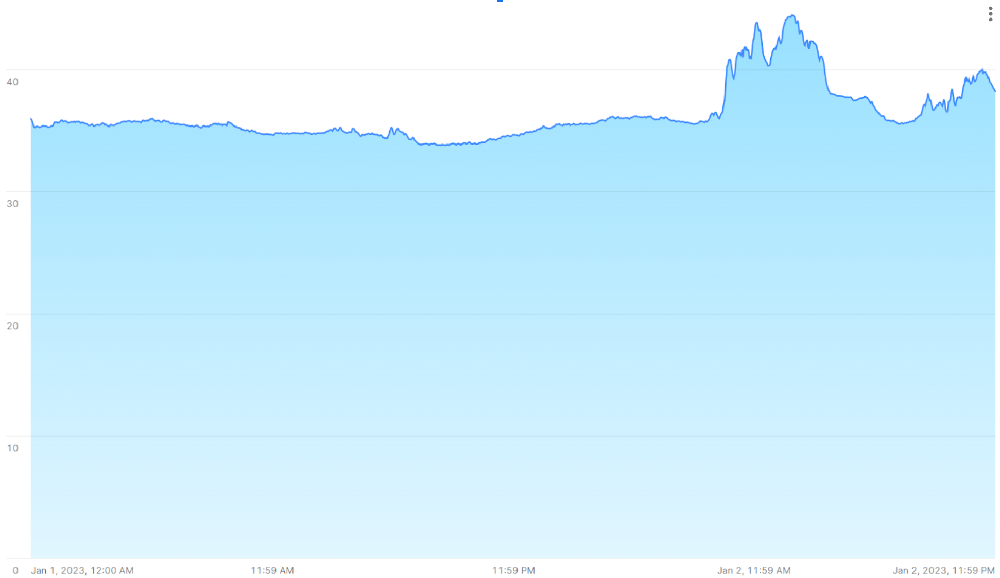
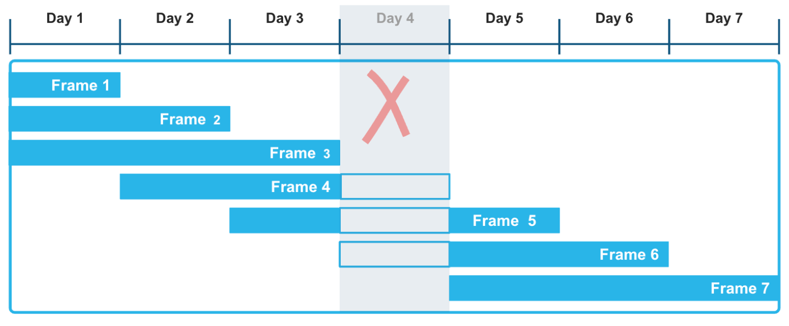
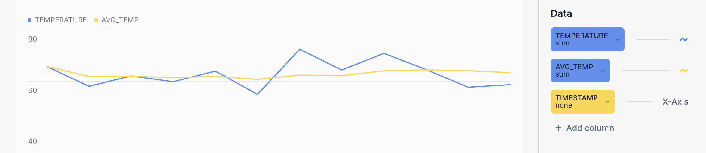
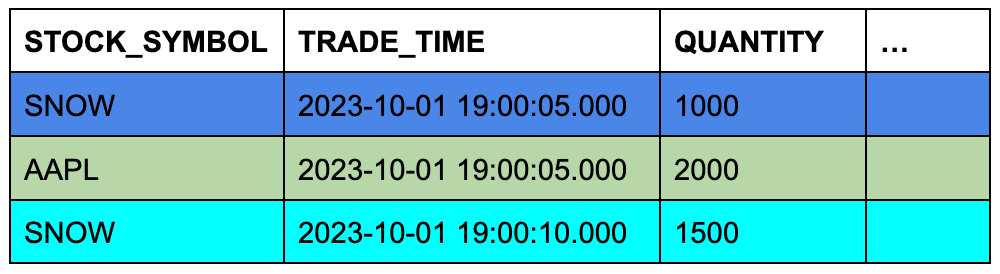
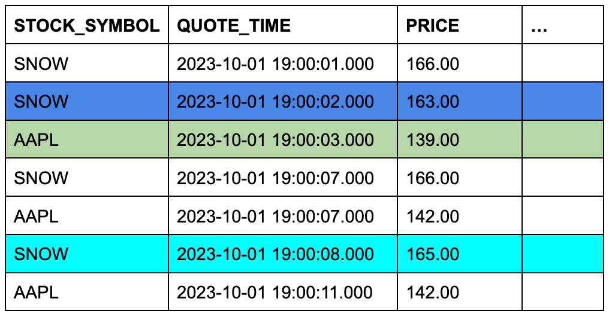

Analyzing time-series data¶
You can analyze time-series data in Snowflake, using functionality designed specifically for this purpose. Database administrators, data scientists, and application developers have to make sure that the time series is stored and loaded efficiently, and in many cases summarized into a form that is complete and consistent, before making the data available to business analysts and other consumers.
Introduction: What is a time series?¶
A time series consists of sequential observations that capture how systems, processes, and behaviors change over a period of time. Time-series data is collected from a broad range of devices across a broad range of industries. Common examples include stock-trading data collected for financial applications, weather observations, temperature readings collected from sensors in smart factories, and logs of user clicks in digital advertising.
A single record in a time series typically has the following components:
A date, time, or timestamp that has a consistent level of granularity (milliseconds, seconds, minutes, hours, etc.).
One or more measurements or metrics of some kind, usually numeric (facts that might reveal trends or anomalies in the data).
Dimensions of interest that are associated with the measurement, such as a location for a temperature reading, or a stock symbol for a given trade.
For example, the following weather observation has start and end timestamps, a rainfall measurement (0.32),
and location information:
EVENTID | TYPE | SEVERITY | START_TIME | END_TIME | PRECIP | TIME_ZONE | CITY | COUNTY | STATE | ZIP
W100 | Rain | Moderate | 2020-12-20 16:35:00.000 | 2020-12-20 17:15:00.000 | 0.32 | US/Eastern | Southport | Brunswick | NC | 28461
The following data collected from a factory device has a namespace (IOT), a tag ID or sensor ID (3000),
a timestamp for the temperature reading on the device, the temperature reading itself (21.1673), and a “broker timestamp,”
which is when the data subsequently arrived at the data broker. For example, the data broker might be a Kafka server that ingests data into a Snowflake table.
DEVICE | LINE | DEVICE_TIMESTAMP | TEMP | BROKER_TIMESTAMP
IOT | 3000 | 2023-01-01 00:01:00.000 | 21.1673 | 2023-01-01 00:01:32.000
A time series might reveal spikes when readings change dramatically for some reason. For example, the following image shows a sequence of temperature readings taken at 15-second intervals, with values peaking over 40°C after being steadily in the 35°C range for the previous day.

The following sections show how to analyze and visualize large volumes of this kind of data with SQL functions and joins that provide fast, accurate results.
How to store time-series data¶
The following datetime data types are supported:
DATE
TIME
TIMESTAMP (and variations, including TIMESTAMP_TZ)
For information about loading, managing, and querying data that uses these data types, see Working with date and time values.
A number of commonly used SQL functions are available to help with both storing and querying time-series data. For example, you can use CONVERT_TIMEZONE to convert timestamps from one time zone to another, and you can use functions such as EXTRACT and TIMEADD to manipulate time-based data as needed.
Note
For TIMESTAMP_TZ data, Snowflake stores the offset of a given time zone, not the actual time zone, at the moment of creation for a given value.
To optimize query performance, tables used for time-series analytics are often clustered by time (and sometimes also by sensor ID or a similar dimension). See Clustering Keys & Clustered Tables.
Aggregating time-series data¶
Management of time-series data might require the aggregation of large volumes of fine-grained records into a more summarized form (a process sometimes referred to as “downsampling”). Given a large set of records with a specific time-based granularity (milliseconds, seconds, minutes, etc.), you can roll up these records to a coarser granularity, effectively producing a smaller sample.
Downsampling is valuable because it decreases the size of a data set and its storage requirements. A coarser level of granularity also reduces compute resource requirements during query execution. Another key reason for downsampling is that a large number of records in a time series might be redundant from an analyst’s point of view. For example, if a sensor emits a new value once every second, but this measurement rarely changes within each 60-second interval, the data can be rolled up to the minute level for analysis.
Another case for downsampling occurs when two different data sets need to be analyzed as one, but they have different time granularities. For example, Sensor A in a factory collects data every 15 seconds, but Sensor B collects related data every 30 seconds. In this case, aggregating the records into 1-minute buckets might be a good solution. IDs and dimensions in each data set are retained as they are, but numeric measurements are summed or averaged by a common time interval.
Downsampling examples¶
You can downsample a data set that is stored in a table by using the TIME_SLICE function. This function calculates the start and end times of fixed-width “buckets” so that individual records can be grouped and summarized, using standard aggregate functions, such as SUM and AVG.
Similarly, the DATE_TRUNC function truncates part of a series of date or timestamp values, reducing their granularity. The following sections show examples of each function.
Downsampling with TIME_SLICE¶
The following example downsamples a table named sensor_data_ts, which contains readings
from two factory sensors and contains 5.3 million rows. These readings were ingested per second, so 5.3 million rows
represents only one month of data, with just over 2.5 million rows per sensor. You can use the TIME_SLICE function to
aggregate up to a single row per minute, per hour, or per day, for example.
To run this example, first create and load the sensor_data_ts table; see Creating the sensor_data_ts table.
Here is a small sample of the data in the table:
+-----------+-------------------------+-------------+-----------+-----------+
| DEVICE_ID | TIMESTAMP | TEMPERATURE | VIBRATION | MOTOR_RPM |
|-----------+-------------------------+-------------+-----------+-----------|
| DEVICE1 | 2024-03-01 00:00:00.000 | 32.6908 | 0.3158 | 1492 |
| DEVICE2 | 2024-03-01 00:00:00.000 | 35.2086 | 0.3232 | 1461 |
| DEVICE1 | 2024-03-01 00:00:01.000 | 35.9578 | 0.3302 | 1452 |
| DEVICE2 | 2024-03-01 00:00:01.000 | 26.2468 | 0.3029 | 1455 |
+-----------+-------------------------+-------------+-----------+-----------+
The table contains 60 readings like these per minute for each device, as shown by this query:
SELECT device_id, count(*) FROM sensor_data_ts
WHERE TIMESTAMP >= ('2024-03-01 00:01:00')
AND TIMESTAMP < ('2024-03-01 00:02:00')
GROUP BY device_id;
+-----------+----------+
| DEVICE_ID | COUNT(*) |
|-----------+----------|
| DEVICE2 | 60 |
| DEVICE1 | 60 |
+-----------+----------+
In this downsampling query, the TIME_SLICE function defines one-minute buckets and returns the start time of each bucket. The AVG function calculates the average temperature for each bucket per device. The COUNT(*) function is included for reference, just to show how many rows land in each time bucket.
The vibration and motor_rpm columns are not included, but they could be aggregated in the same way
as the temperature column or by using different aggregate functions.
Important
If you run this example yourself, your output will not match exactly because the sensor_data_ts table is loaded
with randomly generated values.
SELECT
TIME_SLICE(TO_TIMESTAMP_NTZ(timestamp), 1, 'MINUTE') minute_slice,
device_id,
COUNT(*),
AVG(temperature) avg_temp
FROM sensor_data_ts
WHERE TIMESTAMP >= ('2024-03-01 00:01:00')
AND TIMESTAMP < ('2024-03-01 00:02:00')
GROUP BY 1,2
ORDER BY 1,2;
+-------------------------+-----------+----------+---------------+
| MINUTE_SLICE | DEVICE_ID | COUNT(*) | AVG_TEMP |
|-------------------------+-----------+----------+---------------|
| 2024-03-01 00:01:00.000 | DEVICE1 | 60 | 32.4315466667 |
| 2024-03-01 00:01:00.000 | DEVICE2 | 60 | 30.4967783333 |
+-------------------------+-----------+----------+---------------+
By using the TIME_SLICE function, you can create smaller, aggregated tables for analysis purposes, and you can apply the downsampling process at different levels (hour, day, week, and so on).
Downsampling with DATE_TRUNC¶
The following example selects data from a table named order_header in the raw.pos
schema of the
Tasty Bytes sample database.
This table contains 248M rows.
The order_header table has a TIMESTAMP column named order_ts. The query creates an aggregated time series by
using this column as the second argument to the DATE_TRUNC function. The first argument specifies a day interval.
This means that the individual records, which have an hours/minutes/seconds granularity, are rolled up by day.
The query groups the records by two dimensions: truck_id and
location_id. The avg_amount column returns the average price per order, per food truck, per
location for each business day on record.
The query shown here limits the results to the first 25 rows for January 1, 2022. If you remove this date filter and the LIMIT clause, the query downsamples the original 248M rows to about 500,000 rows.
SELECT DATE_TRUNC('day', order_ts)::date sliced_ts, truck_id, location_id, AVG(order_amount)::NUMBER(4,2) as avg_amount
FROM order_header
WHERE EXTRACT(YEAR FROM order_ts)='2022'
GROUP BY date_trunc('day', order_ts), truck_id, location_id
ORDER BY 1, 2, 3 LIMIT 25;
+------------+----------+-------------+------------+
| SLICED_TS | TRUCK_ID | LOCATION_ID | AVG_AMOUNT |
|------------+----------+-------------+------------|
| 2022-01-01 | 1 | 3223 | 19.23 |
| 2022-01-01 | 1 | 3869 | 20.15 |
| 2022-01-01 | 2 | 2401 | 39.29 |
| 2022-01-01 | 2 | 4199 | 34.29 |
| 2022-01-01 | 3 | 2883 | 35.01 |
| 2022-01-01 | 3 | 2961 | 39.15 |
| 2022-01-01 | 4 | 2614 | 35.95 |
| 2022-01-01 | 4 | 2899 | 40.29 |
| 2022-01-01 | 6 | 1946 | 26.58 |
| 2022-01-01 | 6 | 14960 | 18.59 |
| 2022-01-01 | 7 | 1427 | 26.91 |
| 2022-01-01 | 7 | 3224 | 28.88 |
| 2022-01-01 | 9 | 1557 | 35.52 |
| 2022-01-01 | 9 | 2612 | 43.80 |
| 2022-01-01 | 10 | 2217 | 32.35 |
| 2022-01-01 | 10 | 2694 | 32.23 |
| 2022-01-01 | 11 | 2656 | 44.23 |
| 2022-01-01 | 11 | 3327 | 52.00 |
| 2022-01-01 | 12 | 3181 | 52.84 |
| 2022-01-01 | 12 | 3622 | 49.59 |
| 2022-01-01 | 13 | 2516 | 31.13 |
| 2022-01-01 | 13 | 3876 | 28.13 |
| 2022-01-01 | 14 | 1359 | 72.04 |
| 2022-01-01 | 14 | 2505 | 68.75 |
| 2022-01-01 | 15 | 2901 | 41.90 |
+------------+----------+-------------+------------+
Using windowed aggregations for rolling calculations¶
By using windowed aggregate functions to observe how a metric changes over time, you can analyze a time series for trends. Windowed aggregations are useful for analyzing data within defined subsets (“windows”) of a larger data set. You can compute rolling calculations (such as moving averages and sums) for each row in a data set, taking into account a group of rows before, after, or surrounding the current row. This kind of analysis contrasts with regular aggregations, which summarize the entire data set.
By using range-based window frames with explicit offsets, you can apply a very flexible approach to computing
these rolling aggregations. The RANGE BETWEEN window frame, ordered by either timestamps or numbers, is not disrupted
by gaps that may occur in time-series data. For instance, in the following illustration, the fact that Day 4
data is missing in the series of records does not affect the computation of aggregate functions over a three-day moving
window. In particular, frames 3, 4, and 5 are computed correctly, taking into account that Day 4 data is unknown.
{kind=link}

The following example calculates a moving sum over weather data that records hourly precipitation readings in different cities and counties. You can run this kind of query to evaluate trends in various time-series data sets, such as sensors and other IoT devices, especially when those data sets are known or expected to have gaps.
The window function includes in its frame the current precipitation reading and all the readings that fall within the
specified time interval before the current reading. The rolling calculation is based on this flexible and
logical range of rows rather than an exact number of rows. The first row for each city has matching precip and
moving_sum_precip values. After that, the sum is recalculated for each subsequent row in the frame. The raw values
fluctuate significantly, but the moving sums have a strong smoothing effect.
To run this example, follow these instructions first: Create and load the heavy_weather table.
This very small table contains sporadic hourly weather observations, with lots of gaps, including a missing day. The query
returns the moving sum of precipitation values ordered by the start_time column. The window frame defines a
range between 12 hours before the current row and the current row. Therefore, the frame consists of the current row plus only those
rows that have timestamps up to 12 hours earlier than the ORDER BY timestamp for the current row.
SELECT city, start_time, precip,
SUM(precip) OVER(
PARTITION BY city
ORDER BY start_time
RANGE BETWEEN INTERVAL '12 hours' PRECEDING AND CURRENT ROW) moving_sum_precip
FROM heavy_weather
WHERE city IN('South Lake Tahoe','Big Bear City')
GROUP BY city, precip, start_time
ORDER BY city;
+------------------+-------------------------+--------+-------------------+
| CITY | START_TIME | PRECIP | MOVING_SUM_PRECIP |
|------------------+-------------------------+--------+-------------------|
| Big Bear City | 2021-12-24 05:35:00.000 | 0.42 | 0.42 |
| Big Bear City | 2021-12-24 16:55:00.000 | 0.09 | 0.51 |
| Big Bear City | 2021-12-26 09:55:00.000 | 0.07 | 0.07 |
| South Lake Tahoe | 2021-12-23 16:23:00.000 | 0.56 | 0.56 |
| South Lake Tahoe | 2021-12-23 17:24:00.000 | 0.38 | 0.94 |
| South Lake Tahoe | 2021-12-23 18:30:00.000 | 0.28 | 1.22 |
| South Lake Tahoe | 2021-12-23 19:36:00.000 | 0.80 | 2.02 |
| South Lake Tahoe | 2021-12-24 06:49:00.000 | 0.17 | 0.97 |
| South Lake Tahoe | 2021-12-24 15:53:00.000 | 0.07 | 0.24 |
| South Lake Tahoe | 2021-12-26 05:43:00.000 | 0.16 | 0.16 |
| South Lake Tahoe | 2021-12-27 14:53:00.000 | 0.07 | 0.07 |
| South Lake Tahoe | 2021-12-27 17:53:00.000 | 0.07 | 0.14 |
+------------------+-------------------------+--------+-------------------+
The three moving_sum_precip values for Big Bear City are calculated as follows:
0.42 = 0.42 (no preceding rows)
0.42 + 0.09 = 0.51 (the first two rows are within the 12-hour window)
0.07 = 0.07 (no preceding rows are within the 12-hour window)
The South Lake Tahoe rows include these calculations, for example:
0.56 + 0.38 + 0.28 + 0.80 = 2.02 (all four rows for 2024-12-23 are within 12 hours of each other)
0.80 + 0.17 = 0.97 (one preceding row is within the 12-hour window)
Other window functions, such as the LEAD and LAG ranking functions, are also commonly used in time-series analysis. Use the LEAD window function to find the next data point in the time series, relative to the current data point, and the LAG function to find the previous data point.
Visualizing query results in Snowsight¶
You can use Snowsight to visualize the results of aggregation queries, and get a better sense of the smoothing effect of calculations with sliding window frames. In the query worksheet, click the Chart button next to Results.
For example, the yellow line in the following bar chart shows a much smoother trend for average temperature versus the blue line for the raw temperature. The query itself looks like this:
SELECT device_id, timestamp, temperature, AVG(temperature)
OVER (PARTITION BY device_id ORDER BY timestamp
ROWS BETWEEN 6 PRECEDING AND CURRENT ROW) AS avg_temp
FROM sensor_data_ts
WHERE timestamp BETWEEN '2024-03-15 00:00:59.000' AND '2024-03-15 00:01:10.000'
ORDER BY 1, 2;

Using the MIN_BY and MAX_BY aggregate functions¶
The ability to select one column based on the minimum or maximum value of another column in the same row is a common requirement for SQL developers who are working with time-series data. MIN_BY and MAX_BY are convenience functions that return the starting and ending (or highest and lowest, or first and last) values in a table when the data is sorted by some other column, such as a timestamp.
The first example simply finds the last (most recent) precip value in the whole table. The MAX_BY function sorts all the rows
by their start_time value, then returns the precip value for the “max” start time.
To create and load the table used in the following examples, see Creating the heavy_weather table.
SELECT MAX_BY(precip, start_time) most_recent_precip
FROM heavy_weather;
+--------------------+
| MOST_RECENT_PRECIP |
|--------------------|
| 0.07 |
+--------------------+
You can verify this result (and get more information about it) by running this query:
SELECT * FROM heavy_weather WHERE start_time=
(SELECT MAX(start_time) FROM heavy_weather);
+-------------------------+--------+-------+-------------+
| START_TIME | PRECIP | CITY | COUNTY |
|-------------------------+--------+-------+-------------|
| 2021-12-30 20:53:00.000 | 0.07 | Lebec | Los Angeles |
+-------------------------+--------+-------+-------------+
You can add a GROUP BY clause to ask more interesting questions about this data. For example, the following query
finds the last precipitation value that was observed for each city in California, ordered by precip values
(high to low). The results are grouped by city to return the last precip value for each different city.
SELECT city, MAX_BY(precip, start_time) most_recent_precip
FROM heavy_weather
GROUP BY city
ORDER BY 2 DESC;
+------------------+--------------------+
| CITY | MOST_RECENT_PRECIP |
|------------------+--------------------|
| Alta | 0.89 |
| Bishop | 0.75 |
| Mammoth Lakes | 0.37 |
| Alturas | 0.23 |
| Mount Shasta | 0.09 |
| South Lake Tahoe | 0.07 |
| Big Bear City | 0.07 |
| Montague | 0.07 |
| Lebec | 0.07 |
+------------------+--------------------+
The last time an observation was taken for the city of Alta, the precip value was 0.89,
and the last time an observation was taken for the cities of South Lake Tahoe, Big Bear City, Montague, and Lebec, the precip
value was 0.07 for all four locations. (Note that the query does not tell you when those observations were taken.)
You can return the “opposite” result set (oldest precip record versus most recent) by using the MIN_BY function.
SELECT city, MIN_BY(precip, start_time) oldest_precip
FROM heavy_weather
GROUP BY city
ORDER BY 2 DESC;
+------------------+---------------+
| CITY | OLDEST_PRECIP |
|------------------+---------------|
| South Lake Tahoe | 0.56 |
| Big Bear City | 0.42 |
| Mammoth Lakes | 0.37 |
| Alta | 0.25 |
| Alturas | 0.23 |
| Bishop | 0.08 |
| Lebec | 0.08 |
| Mount Shasta | 0.08 |
| Montague | 0.07 |
+------------------+---------------+
Joining time-series data¶
You can use the ASOF JOIN construct to join tables that contain time-series data. Although ASOF JOIN queries can be emulated through the use of complex SQL, other types of joins, and window functions, these queries are easier to write (and are optimized) if you use the ASOF JOIN syntax.
A common use for ASOF joins is the analysis of financial trading data. Transaction-cost analysis, for example, requires “slippage” calculations, which measure the difference between the price quoted at the time of a decision to buy stocks and the price actually paid when the trade was executed and recorded. The ASOF JOIN can expedite this type of analysis. Given that the key capability of this join method is the analysis of one time series with respect to another, ASOF JOIN can be useful for analyzing any data set that is historical in nature. In many of these use cases, ASOF JOIN can be used to associate data when readings from different devices have timestamps that are not exactly the same.
The assumption is that the time-series data you need to analyze exists in two tables, and there is a timestamp for each row in each table. This timestamp represents the precise “as of” date and time for a recorded event. For each row in the first (or left) table, the join uses a “match condition” with a comparison operator that you specify to find a single row in the second (or right) table where the timestamp value is one of the following:
Less than or equal to the timestamp value in the left table.
Greater than or equal to the timestamp value in the left table.
Less than the timestamp value in the left table.
Greater than the timestamp value in the left table.
The qualifying row on the right side is the closest match, which could be equal in time, earlier in time, or later in time, depending on the specified comparison operator.
The cardinality of the result of the ASOF JOIN is always equal to the cardinality of the left table. If the left table contains 40 million rows, the ASOF JOIN returns 40 million rows. Therefore, the left table can be thought of as the “preserving” table, and the right table as the “referenced” table.
Joining two tables on the closest match (alignment)¶
For example, in a financial application, you might have a table named quotes and a table named trades.
One table records the history of bids to buy stock, and the other records the history of actual trades.
A bid to buy stocks happens before the trade (or possibly at the “same” time, depending on the granularity of
the recorded time). Both tables have timestamps, and both have other columns of interest that you might want to
compare. A simple ASOF JOIN query will return the closest quote (in time) before each trade. In other words,
the query asks: What was the price of a given stock at the time I made a trade?
Assume that the trades table contains three rows, and the quotes table contains seven rows.
The background color of the cells shows which three rows from quotes will qualify for the ASOF JOIN when the
rows are joined on matching stock symbols and their timestamp columns are compared.
TRADES Table (Left or “Preserving” Table)

QUOTES Table (Right or “Referenced” Table)

This conceptual example is easy to turn into a specific ASOF JOIN query:
SELECT t.stock_symbol, t.trade_time, t.quantity, q.quote_time, q.price
FROM trades t ASOF JOIN quotes q
MATCH_CONDITION(t.trade_time >= quote_time)
ON t.stock_symbol=q.stock_symbol
ORDER BY t.stock_symbol;
+--------------+-------------------------+----------+-------------------------+--------------+
| STOCK_SYMBOL | TRADE_TIME | QUANTITY | QUOTE_TIME | PRICE |
|--------------+-------------------------+----------+-------------------------+--------------|
| AAPL | 2023-10-01 09:00:05.000 | 2000 | 2023-10-01 09:00:03.000 | 139.00000000 |
| SNOW | 2023-10-01 09:00:05.000 | 1000 | 2023-10-01 09:00:02.000 | 163.00000000 |
| SNOW | 2023-10-01 09:00:10.000 | 1500 | 2023-10-01 09:00:08.000 | 165.00000000 |
+--------------+-------------------------+----------+-------------------------+--------------+
The ON condition groups the matched rows by their stock symbols.
To run this example, create and load the tables as follows:
CREATE OR REPLACE TABLE trades (
stock_symbol VARCHAR(4),
trade_time TIMESTAMP_NTZ(9),
quantity NUMBER(38,0)
);
CREATE OR REPLACE TABLE quotes (
stock_symbol VARCHAR(4),
quote_time TIMESTAMP_NTZ(9),
price NUMBER(12,8)
);
INSERT INTO trades VALUES
('SNOW','2023-10-01 09:00:05.000', 1000),
('AAPL','2023-10-01 09:00:05.000', 2000),
('SNOW','2023-10-01 09:00:10.000', 1500);
INSERT INTO quotes VALUES
('SNOW','2023-10-01 09:00:01.000', 166.00),
('SNOW','2023-10-01 09:00:02.000', 163.00),
('SNOW','2023-10-01 09:00:07.000', 166.00),
('SNOW','2023-10-01 09:00:08.000', 165.00),
('AAPL','2023-10-01 09:00:03.000', 139.00),
('AAPL','2023-10-01 09:00:07.000', 142.00),
('AAPL','2023-10-01 09:00:11.000', 142.00);
For more examples of ASOF JOIN queries, see Examples.
Filling gaps in data with ASOF JOIN¶
In addition to aligning the data in two tables via non-exact matches on time-based columns, ASOF JOIN is useful for filling gaps in a time series when your raw data table is missing rows for particular dates or timestamps. This process is known as “gap-filling” or “interpolation.” When rows are missing because faulty equipment, or a power failure, results in skipped sensor readings, you can use ASOF JOIN to interpolate values from a generated time series into the table. The missing rows are filled in with the last known value for the readings that are missing. This value is also known as the “last observation carried forward” (LOCF). The ASOF JOIN query returns a complete set of rows that are in chronological order and contiguous.
To use ASOF JOIN for interpolation, follow these steps:
Identify the gaps in your table by running a simple query.
Generate a complete time series, with the appropriate grain, for the period of time that you need to cover. For example, your time series might be a simple sequence of dates for a particular year, or a much more granular sequence of timestamps per second for some number of days. You can use SQL or a spreadsheet application to generate the list of values.
The time series will also need a meaningful ID or dimension for each row that you will specify later in the ASOF JOIN ON condition.
Write an ASOF JOIN query that interpolates values into the missing rows. The generated time series will be the preserving table and the raw data table will be the referenced table.
The following example requires the sensor_data_ts table. If you haven’t already created and loaded it, see
Creating the sensor_data_ts table. To simulate the need for a gap-filling operation, delete some rows from the table as follows:
DELETE FROM sensor_data_ts
WHERE device_id='DEVICE2'
AND TIMESTAMP > ('2024-03-07 00:01:15')
AND TIMESTAMP <= ('2024-03-07 00:01:20');
The result is a table that is missing five rows for DEVICE2 on March 7th (1:16 through 1:20).
+------------------------+
| number of rows deleted |
|------------------------|
| 5 |
+------------------------+
Now follow these steps to complete the gap-filling exercise.
Note
If you run this example yourself, your output will not match exactly because the sensor_data_ts table is loaded
with randomly generated values.
Step 1: Verify that the table has gaps¶
Run the following query to identify the gaps:
SELECT * FROM sensor_data_ts
WHERE device_id='DEVICE2'
AND TIMESTAMP >= ('2024-03-07 00:01:15')
AND TIMESTAMP <= ('2024-03-07 00:01:21')
ORDER BY TIMESTAMP;
+-----------+-------------------------+-------------+-----------+-----------+
| DEVICE_ID | TIMESTAMP | TEMPERATURE | VIBRATION | MOTOR_RPM |
|-----------+-------------------------+-------------+-----------+-----------|
| DEVICE2 | 2024-03-07 00:01:15.000 | 30.1088 | 0.2960 | 1457 |
| DEVICE2 | 2024-03-07 00:01:21.000 | 28.0426 | 0.2944 | 1448 |
+-----------+-------------------------+-------------+-----------+-----------+
This query returns two rows for DEVICE2: the last row before the gap and the first row
after the gap.
Step 2: Generate a complete time series to cover the known gaps¶
To generate a time series with a fine grain (one row per second) for the gap in the sensor_data_ts
table, create the following table, which contains generated timestamps:
CREATE OR REPLACE TABLE continuous_timestamps AS
SELECT 'DEVICE2' as DEVICE_ID,
DATEADD('SECOND', ROW_NUMBER() OVER (ORDER BY SEQ8()), '2024-03-07 00:01:15')::TIMESTAMP_NTZ AS TS
FROM TABLE(GENERATOR(ROWCOUNT => 5));
In this SQL statement, 5 is the number of seconds that you need to cover the gap. Note that the device ID value
(DEVICE2) is included in the generated rows.
The following query returns the five generated rows.
SELECT * FROM continuous_timestamps ORDER BY ts;
+-----------+-------------------------+
| DEVICE_ID | TS |
|-----------+-------------------------|
| DEVICE2 | 2024-03-07 00:01:16.000 |
| DEVICE2 | 2024-03-07 00:01:17.000 |
| DEVICE2 | 2024-03-07 00:01:18.000 |
| DEVICE2 | 2024-03-07 00:01:19.000 |
| DEVICE2 | 2024-03-07 00:01:20.000 |
+-----------+-------------------------+
Step 3: Interpolate values by using ASOF JOIN¶
Now you can run an ASOF JOIN query that joins continuous_timestamps to sensor_data_ts and
interpolates values for missing rows for DEVICE2. The match condition finds the closest
row in time for each missing row, and the ON condition guarantees that interpolation occurs
on matching device IDs.
The closest row for the missing rows is the row with the 2024-03-07 00:01:16.000 timestamp,
assuming that >= is specified in the match condition, as shown in this example.
INSERT INTO sensor_data_ts(device_id, timestamp, temperature, vibration, motor_rpm)
SELECT t.device_id, t.ts, s.temperature, s.vibration, s.motor_rpm
FROM continuous_timestamps t
ASOF JOIN sensor_data_ts s
MATCH_CONDITION(t.ts >= s.timestamp)
ON t.device_id = s.device_id
WHERE TIMESTAMP >= ('2024-03-07 00:01:15')
AND TIMESTAMP < ('2024-03-07 00:01:21');
This INSERT statement selects five rows from the ASOF JOIN operation and inserts them into the
sensor_data_ts table.
+-------------------------+
| number of rows inserted |
|-------------------------|
| 5 |
+-------------------------+
To check the results of the interpolation, select those five rows, and the two rows that directly precede and
follow them, from the sensor_data_ts table. Note that the five interpolated rows have picked up the same values
for the temperature, vibration, and motor_rpm columns that were recorded in the 2024-03-07 00:01:15.000
row. The interpolation was successful.
SELECT * FROM sensor_data_ts
WHERE device_id='DEVICE2'
AND TIMESTAMP >= ('2024-03-07 00:01:15')
AND TIMESTAMP <= ('2024-03-07 00:01:21')
ORDER BY TIMESTAMP;
+-----------+-------------------------+-------------+-----------+-----------+
| DEVICE_ID | TIMESTAMP | TEMPERATURE | VIBRATION | MOTOR_RPM |
|-----------+-------------------------+-------------+-----------+-----------|
| DEVICE2 | 2024-03-07 00:01:15.000 | 30.1088 | 0.2960 | 1457 |
| DEVICE2 | 2024-03-07 00:01:16.000 | 30.1088 | 0.2960 | 1457 |
| DEVICE2 | 2024-03-07 00:01:17.000 | 30.1088 | 0.2960 | 1457 |
| DEVICE2 | 2024-03-07 00:01:18.000 | 30.1088 | 0.2960 | 1457 |
| DEVICE2 | 2024-03-07 00:01:19.000 | 30.1088 | 0.2960 | 1457 |
| DEVICE2 | 2024-03-07 00:01:20.000 | 30.1088 | 0.2960 | 1457 |
| DEVICE2 | 2024-03-07 00:01:21.000 | 28.0426 | 0.2944 | 1448 |
+-----------+-------------------------+-------------+-----------+-----------+
Applying ML-based functions to time-series data¶
You can train a model with ML Functions to do predictive analysis on time-series data:
Forecasting uses historical time-series data to make predictions about future data. Given a recorded time series with actual observed values for dates and times in the past, the ML model forecasts what the observed values might be for dates and times in the future.
Anomaly detection identifies outliers, which are data points that deviate from an expected range. In the context of a time series, an outlier is a measurement that is much larger or smaller than other measurements in a similar time interval. To find outliers, the ML function produces a forecast for the same time period that is being checked for anomalies, then compares the forecast results to the actual data.
Top Insights finds the most important dimensions in a data set, builds segments from those dimensions, and detects which of those segments influenced a metric.
Note
For machine-learning purposes, the timestamps in your time series must represent fixed time intervals. If necessary, you can use the DATE_TRUNC or TIME_SLICE function on TIMESTAMP columns to remove irregularities when training the forecast model.
An example of anomaly detection in a time series¶
The following example uses a view with only 30 rows to train an anomaly detection model. Start by generating data into a table, then create a view on the table. The view is not required (you can use a table to train a model), but the view option gives you some flexibility to train models iteratively, with different row counts, without updating the source data.
Note
If you run this example yourself, your output will not match exactly because the sensor_data_30_rows table is loaded
with randomly generated values.
CREATE OR REPLACE TABLE sensor_data_30_rows (
device_id VARCHAR(10),
timestamp TIMESTAMP,
temperature DECIMAL(6,4),
vibration DECIMAL(6,4),
motor_rpm INT);
INSERT INTO sensor_data_30_rows (device_id, timestamp, temperature, vibration, motor_rpm)
SELECT 'DEVICE3', timestamp,
UNIFORM(30.2345, 36.3456, RANDOM()), --
UNIFORM(0.4000, 0.4718, RANDOM()), --
UNIFORM(1510, 1625, RANDOM()) --
FROM (
SELECT DATEADD(SECOND, SEQ4(), '2024-03-01') AS timestamp
FROM TABLE(GENERATOR(ROWCOUNT => 30))
);
CREATE OR REPLACE VIEW sensor_data_view AS SELECT * FROM sensor_data_30_rows;
Now create the model:
CREATE OR REPLACE SNOWFLAKE.ML.ANOMALY_DETECTION sensor_model(
INPUT_DATA => SYSTEM$REFERENCE('VIEW', 'sensor_data_view'),
TIMESTAMP_COLNAME => 'timestamp',
TARGET_COLNAME => 'temperature',
LABEL_COLNAME => '');
+---------------------------------------------+
| status |
|---------------------------------------------|
| Instance SENSOR_MODEL successfully created. |
+---------------------------------------------+
When the model has built successfully, call the <model_name>!DETECT_ANOMALIES method to detect outliers in the specified test data set. The timestamps in the test data must chronologically follow the timestamps in the training data, but there must not be too great a gap in time between the training data and the test data. For example, if you have timestamps for every second, do not use test data that is millions of seconds ahead of the training data.
This example uses another table as the test data, with only three rows. These rows have timestamps that closely follow those in the training data.
CREATE OR REPLACE TABLE sensor_data_device3 (
device_id VARCHAR(10),
timestamp TIMESTAMP,
temperature DECIMAL(6,4),
vibration DECIMAL(6,4),
motor_rpm INT);
INSERT INTO sensor_data_device3 VALUES
('DEVICE3','2024-03-01 00:00:30.000',36.0422,0.4226,1560),
('DEVICE3','2024-03-01 00:00:31.000',36.1519,0.4341,1515),
('DEVICE3','2024-03-01 00:00:32.000',36.1524,0.4321,1591);
CALL sensor_model!DETECT_ANOMALIES(
INPUT_DATA => SYSTEM$REFERENCE('TABLE', 'sensor_data_device3'),
TIMESTAMP_COLNAME => 'timestamp',
TARGET_COLNAME => 'temperature'
);
When the anomaly detection call finishes, it returns output similar to the following:
+-------------------------+---------+--------------+--------------+--------------+------------+--------------+-------------+
| TS | Y | FORECAST | LOWER_BOUND | UPPER_BOUND | IS_ANOMALY | PERCENTILE | DISTANCE |
|-------------------------+---------+--------------+--------------+--------------+------------+--------------+-------------|
| 2024-03-01 00:00:30.000 | 36.0422 | 30.809998241 | 25.583156942 | 36.036839539 | True | 0.9950380683 | 2.578470982 |
| 2024-03-01 00:00:31.000 | 36.1519 | 32.559470456 | 27.332629158 | 37.786311755 | False | 0.961667911 | 1.770378085 |
| 2024-03-01 00:00:32.000 | 36.1524 | 32.205610776 | 26.978769478 | 37.432452075 | False | 0.9741130751 | 1.945009377 |
+-------------------------+---------+--------------+--------------+--------------+------------+--------------+-------------+
The TS and Y columns return the timestamps and temperature values from the test data. In this very small test case,
the function found an anomaly (IS_ANOMALY=True). For more information about the output columns, see the “Returns” section in the
function description.
Creating the sensor_data_ts table¶
If you want to test the examples in this section that query the sensor_data_ts table, you can create and load
a copy of this table by running the following SQL script. The script generates one month of synthetic data for sensor
readings by calling the UNIFORM, RANDOM, and GENERATOR functions; therefore, your copy of the table will not return identical
results. The readings will be in the same range but they will not be the same.
CREATE OR REPLACE TABLE sensor_data_device1 (
device_id VARCHAR(10),
timestamp TIMESTAMP,
temperature DECIMAL(6,4),
vibration DECIMAL(6,4),
motor_rpm INT
);
INSERT INTO sensor_data_device1 (device_id, timestamp, temperature, vibration, motor_rpm)
SELECT 'DEVICE1', timestamp,
UNIFORM(25.1111, 40.2222, RANDOM()), -- Temperature range in °C
UNIFORM(0.2985, 0.3412, RANDOM()), -- Vibration range in mm/s
UNIFORM(1400, 1495, RANDOM()) -- Motor RPM range
FROM (
SELECT DATEADD(SECOND, SEQ4(), '2024-03-01') AS timestamp
FROM TABLE(GENERATOR(ROWCOUNT => 2678400)) -- seconds in 31 days
);
CREATE OR REPLACE TABLE sensor_data_device2 (
device_id VARCHAR(10),
timestamp TIMESTAMP,
temperature DECIMAL(6,4),
vibration DECIMAL(6,4),
motor_rpm INT
);
INSERT INTO sensor_data_device2 (device_id, timestamp, temperature, vibration, motor_rpm)
SELECT 'DEVICE2', timestamp,
UNIFORM(24.6642, 36.3107, RANDOM()), -- Temperature range in °C
UNIFORM(0.2876, 0.3333, RANDOM()), -- Vibration range in mm/s
UNIFORM(1425, 1505, RANDOM()) -- Motor RPM range
FROM (
SELECT DATEADD(SECOND, SEQ4(), '2024-03-01') AS timestamp
FROM TABLE(GENERATOR(ROWCOUNT => 2678400)) -- seconds in 31 days
);
INSERT INTO sensor_data_device1 SELECT * FROM sensor_data_device2;
DROP TABLE IF EXISTS sensor_data_ts;
ALTER TABLE sensor_data_device1 rename to sensor_data_ts;
DROP TABLE sensor_data_device2;
SELECT COUNT(*) FROM sensor_data_ts; -- verify row count = 5356800
Creating the heavy_weather table¶
The following script creates and loads the heavy_weather table, which is used in the examples
for the MAX_BY functions. The table contains 55 rows of snowfall precipitation records for
California cities during the last week of 2021.
CREATE OR REPLACE TABLE heavy_weather
(start_time TIMESTAMP, precip NUMBER(3,2), city VARCHAR(20), county VARCHAR(20));
INSERT INTO heavy_weather VALUES
('2021-12-23 06:56:00.000',0.08,'Mount Shasta','Siskiyou'),
('2021-12-23 07:51:00.000',0.09,'Mount Shasta','Siskiyou'),
('2021-12-23 16:23:00.000',0.56,'South Lake Tahoe','El Dorado'),
('2021-12-23 17:24:00.000',0.38,'South Lake Tahoe','El Dorado'),
('2021-12-23 18:30:00.000',0.28,'South Lake Tahoe','El Dorado'),
('2021-12-23 19:35:00.000',0.37,'Mammoth Lakes','Mono'),
('2021-12-23 19:36:00.000',0.80,'South Lake Tahoe','El Dorado'),
('2021-12-24 04:43:00.000',0.25,'Alta','Placer'),
('2021-12-24 05:26:00.000',0.34,'Alta','Placer'),
('2021-12-24 05:35:00.000',0.42,'Big Bear City','San Bernardino'),
('2021-12-24 06:49:00.000',0.17,'South Lake Tahoe','El Dorado'),
('2021-12-24 07:40:00.000',0.07,'Alta','Placer'),
('2021-12-24 08:36:00.000',0.07,'Alta','Placer'),
('2021-12-24 11:52:00.000',0.08,'Alta','Placer'),
('2021-12-24 12:52:00.000',0.38,'Alta','Placer'),
('2021-12-24 15:44:00.000',0.13,'Alta','Placer'),
('2021-12-24 15:53:00.000',0.07,'South Lake Tahoe','El Dorado'),
('2021-12-24 16:55:00.000',0.09,'Big Bear City','San Bernardino'),
('2021-12-24 21:53:00.000',0.07,'Montague','Siskiyou'),
('2021-12-25 02:52:00.000',0.07,'Alta','Placer'),
('2021-12-25 07:52:00.000',0.07,'Alta','Placer'),
('2021-12-25 08:52:00.000',0.08,'Alta','Placer'),
('2021-12-25 09:48:00.000',0.18,'Alta','Placer'),
('2021-12-25 12:52:00.000',0.10,'Alta','Placer'),
('2021-12-25 17:21:00.000',0.23,'Alturas','Modoc'),
('2021-12-25 17:52:00.000',1.54,'Alta','Placer'),
('2021-12-26 01:52:00.000',0.61,'Alta','Placer'),
('2021-12-26 05:43:00.000',0.16,'South Lake Tahoe','El Dorado'),
('2021-12-26 05:56:00.000',0.08,'Bishop','Inyo'),
('2021-12-26 06:52:00.000',0.75,'Bishop','Inyo'),
('2021-12-26 06:53:00.000',0.08,'Lebec','Los Angeles'),
('2021-12-26 07:52:00.000',0.65,'Alta','Placer'),
('2021-12-26 09:52:00.000',2.78,'Alta','Placer'),
('2021-12-26 09:55:00.000',0.07,'Big Bear City','San Bernardino'),
('2021-12-26 14:22:00.000',0.32,'Alta','Placer'),
('2021-12-26 14:52:00.000',0.34,'Alta','Placer'),
('2021-12-26 15:43:00.000',0.35,'Alta','Placer'),
('2021-12-26 17:31:00.000',5.24,'Alta','Placer'),
('2021-12-26 22:52:00.000',0.07,'Alta','Placer'),
('2021-12-26 23:15:00.000',0.52,'Alta','Placer'),
('2021-12-27 02:52:00.000',0.08,'Alta','Placer'),
('2021-12-27 03:52:00.000',0.14,'Alta','Placer'),
('2021-12-27 04:52:00.000',1.52,'Alta','Placer'),
('2021-12-27 14:37:00.000',0.89,'Alta','Placer'),
('2021-12-27 14:53:00.000',0.07,'South Lake Tahoe','El Dorado'),
('2021-12-27 17:53:00.000',0.07,'South Lake Tahoe','El Dorado'),
('2021-12-30 11:23:00.000',0.12,'Lebec','Los Angeles'),
('2021-12-30 11:43:00.000',0.98,'Lebec','Los Angeles'),
('2021-12-30 13:53:00.000',0.23,'Lebec','Los Angeles'),
('2021-12-30 14:53:00.000',0.13,'Lebec','Los Angeles'),
('2021-12-30 15:15:00.000',0.29,'Lebec','Los Angeles'),
('2021-12-30 17:53:00.000',0.10,'Lebec','Los Angeles'),
('2021-12-30 18:53:00.000',0.09,'Lebec','Los Angeles'),
('2021-12-30 19:53:00.000',0.07,'Lebec','Los Angeles'),
('2021-12-30 20:53:00.000',0.07,'Lebec','Los Angeles')
;